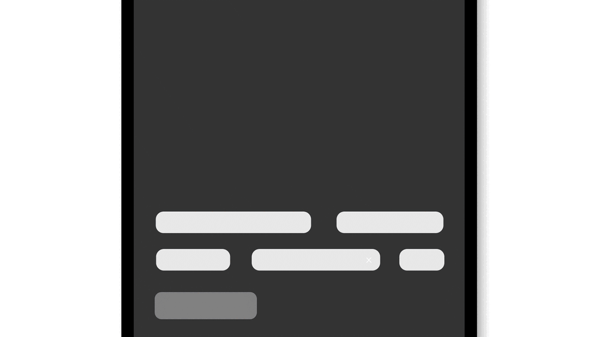
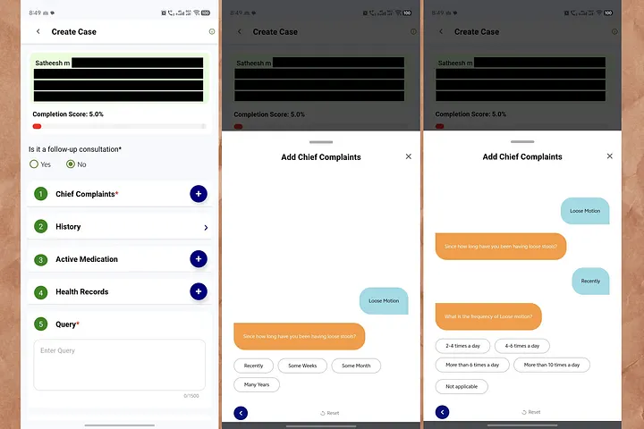
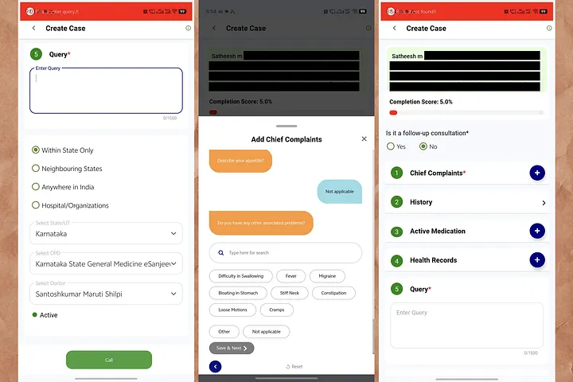
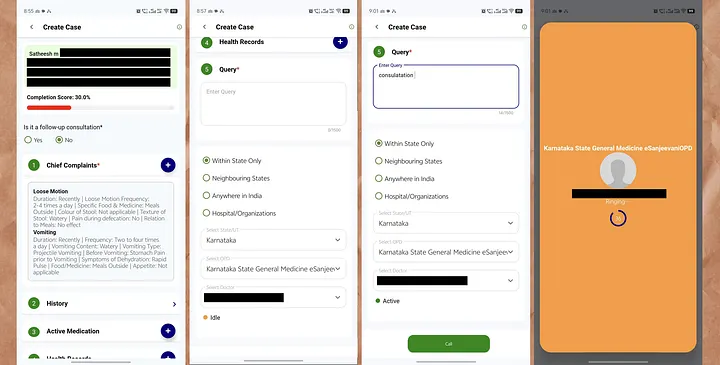

It was nothing serious. That's what I told myself.
Just loose motion. The kind you'd normally wait out. But a day passed, and the small worry arrived — quiet, insistent, the kind you stop being able to ignore. I didn't want a clinic queue. I wanted someone who knew to just tell me it was fine or tell me it wasn't.
So I did what the government ads say to do. I opened eSanjeevani (operates under Ministry of Health and Family Welfare), India's free telemedicine app. A doctor, from home, no waiting room. Built for exactly this moment.
I found my patient card. I tapped Chief Complaints. A friendly chat window slid up — orange bubbles from the app, blue bubbles from me. It felt approachable. Like texting.
Then it asked me a question. I answered. It asked another. I answered.
Then it kept asking.

The Questions
Six questions deep into a single symptom, and I was still nowhere near a doctor. And the number at the top hadn't moved.
Fifteen questions answered. Still 5%. The one signal that was supposed to say "you're getting there" sat frozen — quietly insisting I had done almost nothing.

The Doubt
I finished the Loose Motion section. Then a doubt crept in — did that just save? Or did I answer the same disease history twice? There was no confirmation. No little "saved" tick. So I did the natural thing. I closed the popup to check.
The screen turned red.
No explanation. No "your answers are safe." Just a system error, at the exact moment I paused to make sure I hadn't made a mistake. I reopened Chief Complaints. Was my earlier answer still there? I had no idea. The app never told me.
I had no other option but to keep going. So I added my second symptom — vomiting.
And the whole thing started again. Since when. How many times. What's in it. What type. What happens before. Symptoms of dehydration. Another full bundle of endless questions, with the score still refusing to move.

The Silence Has a Cousin: The Endless
In my UX Case Study, LinkedIn hurt me with silence — no feedback at all. This app does the opposite. It gives me too much interaction and no reassurance.
There was no "Question 4 of 12." No "your progress is saved." No Skip. No I don't know. The only escape routes were a Reset that nukes everything, and a back arrow I didn't trust. When you're unwell, that combination doesn't feel like a form. It feels like a test you might be failing.
Then, Suddenly, It Worked
I pushed through both symptom trees. I closed the section.
And the frozen 5% jumped to 30%. The bar finally turned. All that effort, credited in one late leap — as if the app had been holding its approval hostage until the very end.
Then came a new screen entirely. Query. A referral-style form — Within State / Neighbouring States / Anywhere in India, a State dropdown, an OPD dropdown ("Karnataka State General Medicine eSanjeevaniOPD"), and a Select Doctor list. 4–5 doctor's names, each marked MD (General Medicine) but no wait time, no "next available," nothing to help a sick person choose. I picked one because I had to pick one.
I tapped Call.
Red again.
After everything — fifteen symptom questions, a scare, two full trees — the thing blocking my doctor was an empty text box I hadn't known was mandatory. I typed one word. consultation. (Even misspelled it — consulatation — because by now I just wanted through.)
I tapped Call again.
The screen went orange. A profile photo. Dr. _______________. Ringing… A countdown: 36.
It worked. I reached a doctor.

And Then Nothing Happened
I expected a conversation. That's what I came for — someone to ask me things, to hear how I sounded, to say the reassuring or the serious thing.
Instead, the doctor just chatted. He read what I'd already entered — my fifteen answers, my chips, my self-assessment — and typed back a prescription. Take this for three days. That was it.
No voice. No "how are you feeling now?" No "tell me more about the vomiting." Nothing I answered got explored. It got processed.
And that's the moment the whole thing clicked into place for me.
All that data entry hadn't been preparing the doctor for a consultation. It had become the consultation.
I filled fifteen fields thinking they'd help a doctor talk to me — and instead they replaced the talk entirely. I had done the doctor's history-taking, in the doctor's vocabulary, and by the time I reached him there was nothing left for him to ask.
The app didn't reduce the friction before care. It confused the friction for care.
That reframes everything — even "coffee ground" and "projectile vomiting." Those weren't clumsy questions. They were the doctor's own triage script, handed to me to self-complete. The design quietly turned me into the junior doctor doing intake, and the actual doctor into a rubber stamp on my self-diagnosis.
Which raises the uncomfortable question the whole flow is built to avoid: if my typed answers are enough to generate a prescription, what was the human for? And if the human matters — and for medicine, they do — then why was I made to do their listening before I ever heard their voice?
Behind the Curtain
The app and I never wanted the same thing at the same time:
- My goal as a patient: talk to a doctor, fast, while I feel unwell.
- The system's goal: collect clean, structured triage data and route me to the right OPD and doctor.
Both sound valid. But here's what I only understood after the call: the intake didn't support the consultation, it substituted for it. I carried 100% of the history-taking, all of it up front, in clinical language — and by the time I reached the doctor, my answers weren't briefing material for a conversation. They were the conversation.
In acute care, that's backwards twice over. The sicker the person, the less they should have to do, not more. And the whole reason to reach a human doctor is the part a form can't capture: the follow-up question, the tone of voice, the thing you didn't know to mention. This flow spent all its effort on the part a form can capture, and then skipped the part only a human can.
And the questions weren't in my language. Not Hindi or Malayalam — I mean not patient/user language:
- "Coffee Ground" vomit
- "Projectile Vomiting" vs "Forceful Vomiting"
- "Green Vomit (Bile)"
- "Stomach Pain" and "Belly Pain" offered as if they were different things
These are the words a doctor uses to triage. I was asked to self-diagnose in clinical vocabulary — the exact job I opened the app to hand to a doctor.
Heuristics Violated
Psychological Effects
Second-Order Effects
The friction looks small on one screen. Its ripples aren't:
- Patients abandon mid-intake and fall back to crowded physical OPDs — the exact load telemedicine was meant to relieve.
- Doctors receive worse data, because scared, guessing users tap "Not applicable" just to move forward.
- The most vulnerable users lose the most. Low digital literacy, rural bandwidth, acute illness — the very people this scheme exists for are the ones most likely to give up at the frozen bar or the red banner.
A system built to widen access ends up quietly narrowing it.
Effort Should Match Acuity
The fix isn't deleting the questions. The doctor genuinely needs that data, and the routing step is real. The fix is reordering who does the work, and when, and reassuring the patient at every step.
Split the intake into two tiers.
Tier 2 — Optional, while waiting: The full symptom tree, clearly framed — "This helps your doctor prepare. Skip if you're feeling too unwell."
Four changes carry most of the weight: